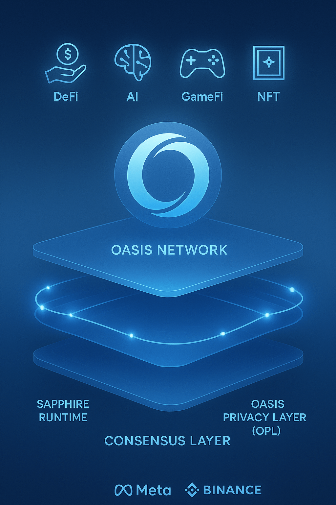
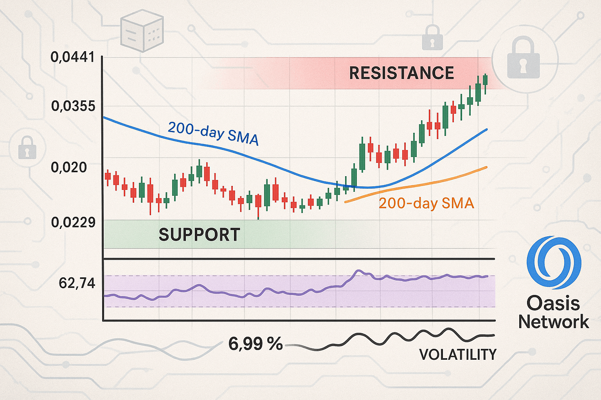

Oasis Network Price Prediction for End of 2025: In-Depth Analysis and Insights
The information in this article is provided for educational purposes only and is not investment advice. Cryptocurrency investments carry risks.
Introduction
As of August 22, 2025, Oasis Network (ROSE) is trading at approximately $0.02786, serving as the native token of the Oasis Network, a privacy-focused layer-1 blockchain launched in November 2020. Known for its scalable, modular architecture separating consensus and compute layers, Oasis supports private DeFi, AI, GameFi, and NFT applications through its Sapphire runtime and Oasis Privacy Layer (OPL). With a circulating supply of 7.41 billion ROSE and a market cap of around $206.39 million (ranked #226), ROSE is used for gas fees, staking, and governance. This article provides a comprehensive analysis of ROSE’s price outlook for the end of 2025, exploring bullish and bearish scenarios, growth drivers, and risks based on current market trends and ecosystem developments.
Current Situation
As of August 22, 2025, ROSE’s price is $0.02786, up 4.43% in the past 24 hours but down 7.40% over the last week, reflecting short-term volatility. The 24-hour trading volume is $10.18 million, with a circulating supply of 7.41 billion ROSE. Technical indicators show a mixed outlook: the 50-day SMA is rising on the daily chart, suggesting short-term bullish momentum, while the 200-day SMA has been falling since July 15, 2025, indicating longer-term weakness. The Fear & Greed Index is at 73 (Greed), with 16/30 (53%) green days and 8.99% volatility over the last 30 days. Recent ecosystem updates, including the ROFL mainnet launch and Binance’s relisting of the ROSE/USDC pair, bolster optimism.
Price Predictions for End of 2025
Analyst forecasts for ROSE by December 2025 vary widely due to market volatility and differing methodologies. Bearish projections, factoring in a potential 30–40% market correction, suggest a price range of $0.003658–$0.03267, aligning with conservative estimates from TradingBeast and WalletInvestor. Moderate projections, based on steady adoption and technical upgrades, estimate $0.1169–$0.331, supported by PricePrediction.net and SimpleSwap. Bullish forecasts, driven by privacy coin demand and a potential market rally, predict ROSE reaching $0.4642–$0.921312, with optimistic outlooks like Capital.com citing potential growth mirroring Facebook’s trajectory. A consensus leans toward $0.1169–$0.267 by year-end, with a high of $0.40 in a strong bull market tied to Bitcoin’s performance.
Factors Driving Price Growth
- Privacy-Focused Technology: Oasis’s Sapphire runtime and OPL enable customizable privacy for DeFi and AI, increasing ROSE adoption.
- Ecosystem Upgrades: The ROFL mainnet launch and wallet enhancements via Metamask Snaps integration boost developer and user engagement.
- Market Rally Potential: A projected crypto market surge in early 2025 (February–April) could lift ROSE, especially if Bitcoin sustains above $100,000.
- Community and Grants: Grants to projects like Tradable and Zeph, plus 112 mainnet validators, strengthen the ecosystem.
- Exchange Accessibility: Binance’s relisting of the ROSE/USDC pair enhances liquidity and investor access.
Risks and Downward Factors
- Market Volatility: A potential 30–40% market correction in early 2025 could depress ROSE’s price, as seen in recent 3.09% monthly declines.
- Regulatory Scrutiny: Privacy-focused blockchains face regulatory risks, potentially limiting adoption or exchange listings.
- Competition: Other privacy coins (e.g., Monero, Zcash) and layer-1 platforms may compete for market share.
- Technical Risks: Issues with upgrades like ROFL or community resistance could impact investor confidence.
Volatility Analysis
From July to August 2025, ROSE’s price dropped from $0.03036 to $0.02786, an 8.23% decline, with a volatility of 8.99%. The RSI at 62.74 indicates neutral momentum, with support at $0.0229 and resistance at $0.0335–$0.0441. The 50-day SMA is rising, signaling short-term bullish pressure, while the 200-day SMA, declining since July 15, 2025, suggests long-term weakness. A falling wedge breakout on the 1-hour chart could push ROSE toward $0.106662 in the short term, but failure to break resistance may lead to a drop to $0.0229. Oasis’s privacy features and ecosystem growth provide a foundation for recovery, though short-term bearish pressure persists.
Conclusion
By the end of 2025, Oasis Network’s ROSE is projected to range between $0.1169 and $0.267, with the potential to reach $0.40–$0.4642 in a bullish market driven by privacy coin demand, ecosystem upgrades, and a crypto market rally. However, investors should be cautious of market volatility, regulatory risks, and competition. Thorough research and risk management are essential before investing in ROSE. For more details on Oasis Network’s ecosystem, visit the official Oasis Protocol website.